Introduction
anndataR
is designed to be an R native implementation of the AnnData
object, inspired by the following packages:
-
anndata
(scverse/anndata): The
Python
anndatapackage and on-disk specification -
zellkonverter
(theislab/zellkonverter):
Convert
AnnDatafiles to/fromSingleCellExperimentobjects -
h5ad:
Read/write
*.h5adfiles natively using rhdf5 -
anndata (dynverse/anndata): An R
implementation of the
AnnDatadata structures, uses reticulate to read/write*.h5adfiles
Ideally, this package will be a complete replacement for all of these
packages, and will be the go-to package for working with
AnnData files in R.
Core features
- An R6
AnnDataclass to work with objects in R - In-memory (
InMemoryAnnData), HDF5-backed (HDF5AnnData), Zarr-backed (ZarrAnnData) and Python-backed (ReticulateAnnData) back ends with a consistent interface - Read/write
.h5adfiles and.zarrstores natively - Convert to/from
SingleCellExperimentobjects - Convert to/from
Seuratobjects
AnnData classes
The different AnnData classes provide a consistent
interface but store and access data in different ways:
- The
InMemoryAnnDatastores data within the R session. This is the simplest back end and will be most familiar to users. It is want you will want to use in most cases where you want to interact with anAnnDataobject. - The
HDF5AnnDataprovides an interface to a H5AD file and minimal data is stored in memory until it is requested by the user. It is primarily designed as an intermediate object when reading/writing H5AD files but can be useful for accessing parts of large files. - The
ZarrAnnDataprovides an interface to a Zarr store and minimal data is stored in memory until it is requested by the user. It is primarily designed as an intermediate object when reading/writing Zarr stores but can be useful for accessing parts of large stores. - The
ReticulateAnnDataaccesses data stored in anAnnDataobject in a concurrent Python session. This comes with the overhead and complexity of using reticulate but is sometimes useful to access functionality that has not yet been implemented in anndataR. - An
AnnDataViewis returned when subsetting anAnnDataobject and provides access to a subset of the data in the referenced object. Some functionality (such as setting slots) requires converting to one of the full classes.
Class diagram
This diagram shows the main R6 classes provided by the
package:

Notation:
-
X: Matrix- variableXis of typeMatrix -
*X: Matrix- variableXis abstract (and implemented by subclasses) -
as_SingleCellExperiment(): SingleCellExperiment- functionas_SingleCellExperimentreturns object of typeSingleCellExperiment -
*as_SingleCellExperiment()- functionas_SingleCellExperimentis abstract (and implemented by subclasses) - Dashed borders indicate classes that are planned but not yet implemented
Session info
sessionInfo()
R version 4.6.1 (2026-06-24)
Platform: x86_64-pc-linux-gnu
Running under: Ubuntu 24.04.4 LTS
Matrix products: default
BLAS: /usr/lib/x86_64-linux-gnu/openblas-pthread/libblas.so.3
LAPACK: /usr/lib/x86_64-linux-gnu/openblas-pthread/libopenblasp-r0.3.26.so; LAPACK version 3.12.0
locale:
[1] LC_CTYPE=C.UTF-8 LC_NUMERIC=C LC_TIME=C.UTF-8
[4] LC_COLLATE=C.UTF-8 LC_MONETARY=C.UTF-8 LC_MESSAGES=C.UTF-8
[7] LC_PAPER=C.UTF-8 LC_NAME=C LC_ADDRESS=C
[10] LC_TELEPHONE=C LC_MEASUREMENT=C.UTF-8 LC_IDENTIFICATION=C
time zone: UTC
tzcode source: system (glibc)
attached base packages:
[1] stats graphics grDevices utils datasets methods base
other attached packages:
[1] BiocStyle_2.41.0
loaded via a namespace (and not attached):
[1] digest_0.6.39 desc_1.4.3 R6_2.6.1
[4] bookdown_0.47 fastmap_1.2.0 xfun_0.60
[7] cachem_1.1.0 knitr_1.51 htmltools_0.5.9
[10] rmarkdown_2.31 lifecycle_1.0.5 cli_3.6.6
[13] sass_0.4.10 pkgdown_2.2.1 textshaping_1.0.5
[16] jquerylib_0.1.4 systemfonts_1.3.2 compiler_4.6.1
[19] tools_4.6.1 ragg_1.5.2 bslib_0.11.0
[22] evaluate_1.0.5 yaml_2.3.12 BiocManager_1.30.27
[25] otel_0.2.0 jsonlite_2.0.0 rlang_1.3.0
[28] fs_2.1.0 htmlwidgets_1.6.4